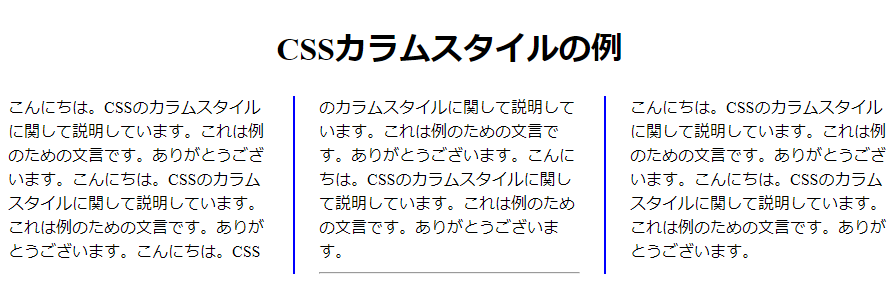

[CSS] Columnスタイル
こんにちは。明月です。
今回はColumn要素に関して調べます。
Column要素は筆者もよく使わない機能ですが、仕様によって使うところもあると思うのでまとめておきました。
スタイル種類は下記とおりになります。
| スタイル | 説明 |
|---|---|
| column-count | カラムの列数を指定する。 |
| column-width | カラムの列幅を指定する（実際の列の幅は、領域のサイズに応じて変化） |
| columns: -width -count | 上記2つのスタイルのShorthandスタイル |
| column-gap | カラムの間の間隔 |
| column-span | 複数のカラムを横断要素 |
| column-rule-width | 各列を区別する線の太さ |
| column-rule-style | 各列を区切る線の種類 |
| column-rule-color | 各列を区切る線の色 |
| column-rule | 上記3つのShorthandスタイル |
| break-before | ページ指定のスタイル（前） |
| break-after | ページ指定のスタイル（後） |
| break-inside | ページの指定のスタイル |
<!DOCTYPE html>
<html>
<head></head>
<body>
<div>
<h1>CSSカラムスタイルの例</h1>
こんにちは。CSSのカラムスタイルに関して説明しています。これは例のための文言です。ありがとうございます。こんにちは。CSSのカラムスタイルに関して説明しています。これは例のための文言です。ありがとうございます。こんにちは。CSSのカラムスタイルに関して説明しています。これは例のための文言です。ありがとうございます。こんにちは。CSSのカラムスタイルに関して説明しています。これは例のための文言です。ありがとうございます。
<hr />
こんにちは。CSSのカラムスタイルに関して説明しています。これは例のための文言です。ありがとうございます。こんにちは。CSSのカラムスタイルに関して説明しています。これは例のための文言です。ありがとうございます。
</div>
</body>
</html>
div{
height:calc(80vh);
/* カラムを三つを作る。幅とカラム数を指定 */
columns:calc(10vw) 3;
/* カラム間の間隔 */
column-gap:50px;
/* カラムを区分する線の太さ、タイプ、色 */
column-rule:2px solid blue;
}
div > h1{
/* カラムを横断要素 */
column-span:all;
text-align:center;
}
div > hr{
column-break-after:always;
}

columnsのサイズはブラウザの幅によって変更するので、calc(10vw)に設定しても幅の(30%)になると思います。カラム数を3で設定しましたので、三つが表示されました。
column-gapは線の基準で余白設定です。線は2pxで実線、青色で設定しました。
h1タグの場合はcolumn要素を無視して表示することです。
hrタグで次のカラムから作成の意味です。
筆者がColumn例を作りながら、いろいろテストしましたが、カラム別のスタイル適用か段落でスタイルことで使いにくいですね。
イメージで使うといいと思いますが、divタグで個別スタイルが扱いやすいと思います。
- [CSS] ブラウザから開発する方法 (developer mode)2019/12/25 07:54:31
- [CSS] 色スタイル、グラデーション2019/12/24 07:37:22
- [CSS] アニメーション (animation)2019/12/20 20:51:38
- [CSS] トランスフォーム (transform)2019/12/19 13:00:26
- [CSS] トランジション(transition)2019/12/18 20:33:57
- [CSS] Columnスタイル2019/12/17 19:52:56
- [CSS] 整列スタイル (float)2019/12/17 00:08:54
- [CSS] 位置(position),表示(display)スタイル2019/12/13 20:08:50
- [CSS] border(枠)、余白スタイル - border, margin, padding2019/12/12 20:16:43
- [CSS] 文字スタイル2019/12/11 21:13:22
- [CSS] その他の疑似選択子 - link, visited, target, enabled, disabled, not, active, hover, focus2019/12/10 07:31:28
- [CSS] 疑似要素選択子 - fist-line, first-letter, before, after2019/12/09 07:28:27
- [CSS] 範囲と指定に関する選択子(全体選択子、要素選択子、孫選択子、子選択子、隣接選択子)2019/12/06 07:27:36
- [CSS] 疑似クラス - only-child, only-of-type, empty, empty, root2019/12/05 07:29:15
- [CSS] 疑似クラス - first-child, last-child, first-of-type, last-of-type2019/12/04 07:28:37
最新投稿
- [Python] Excel(openpyxl)を扱う方法2020/07/16 16:40:31
- [Python] ファイル圧縮、解凍(zipfile)する方法2020/07/14 19:14:22
- [Python] Apache cgiでPythonを使う方法2020/07/09 19:58:19
- [Python] Web serverを起動する方法(http.server)2020/07/09 00:13:13
- [Python] WebSocketを使う方法2020/07/07 17:29:18
- [Python] PythonとJavaのソケット通信する方法2020/07/03 18:35:50
- [Python] PythonとC#のソケット通信2020/07/01 19:28:22
- [Python] INI(環境設定ファイル)を扱う方法2020/06/30 18:26:01
- [Python] Jsonを扱う方法2020/06/29 19:18:15
- [Python] XMLファイルを扱う方法2020/06/26 19:18:14
- [Python] IOを利用してCSVファイルを扱う方法2020/06/25 18:20:30
- [Python] 21. データベース(mariaDB)を連結する方法2020/06/24 18:51:50
- [Python] 20. stringフォマード(Formatting)と補間法(interpolation)2020/06/23 19:03:21
- [Python] 19. 非同期IOのasync/await(asyncio)を使う方法2020/06/22 18:10:12
- [Python] 18. ネットワーク(Socket)通信する方法2020/06/18 19:53:56